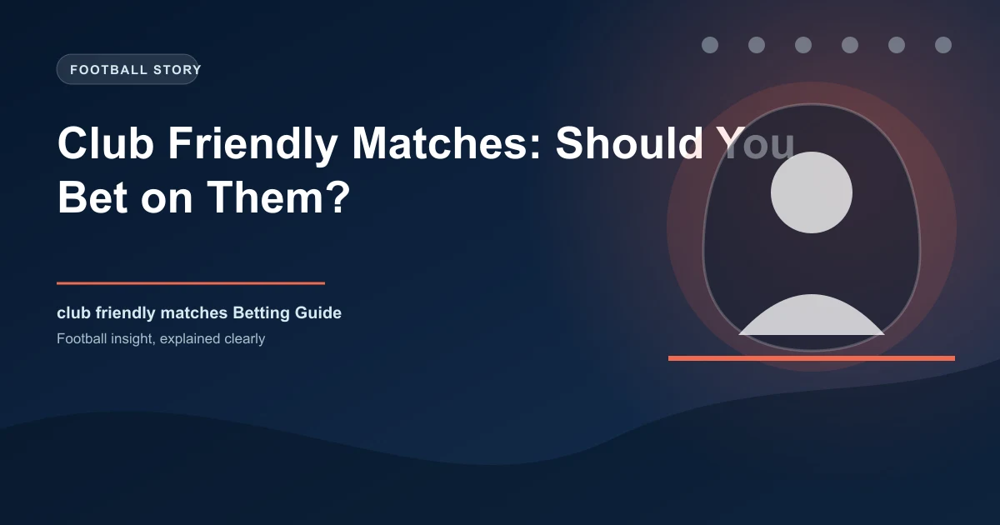

Club Friendly Matches: Should You Bet on Them?

Every summer, thousands of football matches take place that mean absolutely nothing in the standings. Club friendly matches fill the calendar between June and August, featuring everything from hastily arranged training-ground fixtures to glitzy tours of the United States, Asia, and the Middle East. And every summer, bettors lose money on these matches because they apply the same logic they use for competitive fixtures to games that operate by entirely different rules.
The question is not whether friendly matches are unpredictable — they obviously are. The real question is whether that unpredictability can be navigated, and if so, how. This guide breaks down the data, the dynamics, and the betting angles you need to know before you stake a single penny on a pre-season friendly.
What Club Friendlies Actually Are
Before you can evaluate a friendly match as a betting proposition, you need to understand what the match is trying to achieve. Not all friendlies serve the same purpose, and the objective of the match directly affects how the teams will approach it.
Fitness Building
The most common purpose of a pre-season friendly is physical preparation. Footballers returning from summer break need match sharpness, and controlled friendly fixtures allow coaches to build up players' fitness levels in a competitive environment. In the first two or three friendlies of pre-season, you will typically see starting lineups replaced entirely at half-time, with players getting 45 minutes each. The result is almost irrelevant to the coaching staff. What matters is that players complete their minutes without injury.
Tactical Experiments
Pre-season is when managers test new formations, trial untested partnerships, and trial young players in unfamiliar positions. A manager might field a back three for the first time, or experiment with a false nine, or give a 17-year-old academy player a run in the first team. These experiments make tactical prediction virtually impossible because the team on the pitch bears little resemblance to the one that will start the competitive season.
Commercial Tours
Clubs increasingly use pre-season as a commercial opportunity. Tours to the United States, Asia, and the Middle East generate significant revenue through appearance fees, sponsorship activations, and merchandise sales. A club like Real Madrid or Manchester United can earn millions from a single overseas tour. The commercial dimension affects motivation: clubs need to put out recognisable lineups to satisfy sponsors and fans who paid for tickets, but they also need to protect their most valuable players from injury.
Youth Development
Pre-season friendlies are a rare opportunity for academy players to showcase their abilities alongside established first-teamers. Managers deliberately include promising youngsters to assess whether they are ready for first-team involvement in the upcoming season. When a team fields multiple youth players, the quality gap can be significant and difficult to predict.
Why the Data Is Unreliable
If you rely on statistics to make your betting decisions — and you should — friendly matches present a unique problem. The data from friendlies is structurally different from competitive match data, and applying one to the other leads to poor outcomes. For a deeper understanding of how to evaluate team performance, check our guide on how to analyse a football match before betting.
Squad Rotation
In a competitive Premier League match, a manager might make two or three substitutions. In a friendly, the entire starting XI can be replaced at half-time. Some clubs make seven or eight changes between the first and second half. This means you are effectively watching two different teams play, but the scoreline is cumulative. A team that dominates the first half with their strongest lineup might concede three goals in the second half with the reserves on the pitch.
Experimental Lineups
When a manager fields a combination of players who have never played together before, with no tactical preparation specific to the opponent, the team shape and cohesion are fundamentally compromised. Players are learning new positions, new partnerships, and new instructions in real time. The tactical organisation you rely on for competitive match analysis simply does not exist.
Fitness Levels Vary
Players return from summer break at different stages of fitness. Some clubs begin pre-season training earlier than others. Some players have been involved in international tournaments that extended their season by several weeks. A player who is three weeks behind his teammates in fitness training will perform significantly below his normal level, but this information is rarely available to bettors before the match.
The 60-Minute Makeover
Most bookmakers price friendlies as a single 90-minute event. But the reality is that the match is often two or three distinct phases. The first 60 minutes might feature a strong lineup building fitness. The final 30 minutes might feature Under-21 players getting their first taste of senior football. Form analysis that treats the match as a single event misses this critical distinction.
The Numbers Behind Friendly Match Outcomes
Despite the chaos, friendly matches do produce patterns when you look at them in aggregate. The following data is compiled from over 3,000 pre-season friendlies across Europe's top five leagues between 2019 and 2025.
| Metric | Competitive Matches | Pre-Season Friendlies | Difference |
|---|---|---|---|
| Home Win % | 44.2% | 38.7% | -5.5% |
| Draw % | 26.1% | 22.4% | -3.7% |
| Away Win % | 29.7% | 38.9% | +9.2% |
| Avg Goals per Match | 2.67 | 3.14 | +0.47 |
| BTTS % | 52.3% | 61.8% | +9.5% |
| Over 2.5 % | 48.1% | 57.3% | +9.2% |
The numbers reveal three consistent patterns (for the latest pre-season statistics and squad news, resources like BBC Sport and FBref track pre-season results across Europe). First, home advantage is significantly reduced in friendlies. The traditional home win percentage drops by over 5 percentage points because many friendlies are played at neutral venues, on tour, or in stadiums where the atmosphere does not resemble a competitive fixture. Second, draws are less common, partly because managers are less concerned about defensive solidity and more willing to attack. Third, goals increase across the board, with the over 2.5 and BTTS rates climbing by roughly 9 percentage points compared to competitive matches.
Tour Matches vs Local Friendlies
There is also a meaningful difference between friendlies played locally and those played on overseas tours. Tour matches tend to produce even more goals because of heat, travel fatigue, and the commercial pressure to entertain. The average goals per match in overseas tour friendlies rises to 3.41 compared to 2.93 for locally arranged pre-season fixtures.
When Friendlies CAN Offer Value
Saying you should never bet on friendlies is lazy advice. The more useful question is when and where the predictable patterns emerge. There are specific scenarios where friendly matches offer genuine value for informed bettors.
Early Pre-Season Mismatches
In the first one or two weeks of pre-season, the fitness gap between teams can be enormous. A club that started training on June 15 will be significantly sharper than one that started on July 1, particularly in terms of physical intensity and match rhythm. When a fully fit team plays a side that is barely into their second week of training, the quality gap is real and often underpriced by bookmakers who treat both teams as starting from the same baseline.
Commercial Tour Motivation
When a club goes on a commercial tour, the commercial objectives create a predictable pattern. The club needs to win because sponsors and paying fans expect entertainment. But the club also needs to protect its stars. The result is a strong but not star-studded lineup that is motivated to perform but carefully managed. If you can identify which teams are on tour and why, the motivation patterns become clearer than in standard friendlies.
Community and Charity Shields
Matches like the Community Shield, Trofeo Tim, Emirates Cup, and similar pre-season tournaments often carry a trophy and a winner, which changes the dynamic. Teams are more competitive, managers field stronger lineups, and the intensity approaches that of a competitive match. These fixtures are friendlies in name but closer to competitive matches in practice, and the standard betting models tend to underreact to this shift.
Pro Tip: Tour Motivation Matters
When a Premier League club tours the United States or Asia, they are there to win. The commercial contracts, the paying fans, and the sponsors all demand a competitive performance. The lineup will be strong but rotated, and the motivation is higher than in a training-ground friendly. Check today's predictions for matches where tour motivation creates a clear edge.
Markets to Avoid in Friendlies
Some betting markets are particularly poorly suited to friendly matches. Understanding which markets to avoid is just as important as knowing where to find value.
1X2 (Match Result)
The 1X2 market is the most popular market in football betting, and it is one of the worst markets for friendlies. The reduced home advantage, higher draw variance, and unpredictable squad selection make the three-way market extremely difficult to price accurately. Bookmakers know this and widen their margins accordingly, making the juice particularly expensive on match result bets in friendlies.
Both Teams to Score
While the overall BTTS rate is higher in friendlies, predicting which specific matches will see both teams score is harder than it appears. A mismatch where the stronger team wins 4-0 is common in early pre-season. A training exercise where both teams score is equally common. The high BTTS rate is an aggregate statistic that masks enormous variation between individual matches.
Correct Score
Correct score betting is volatile in competitive matches. In friendlies, it is essentially a lottery. With two completely different XIs potentially playing each half, predicting the exact final score requires you to predict the outcome of what amounts to two separate matches. The odds may look tempting at 12/1 or 16/1, but the probability of hitting is lower than the odds suggest.
Player Props and Goalscorer Markets
In competitive matches, you can make educated guesses about which players will start, how long they will play, and what role they will occupy. In friendlies, a star striker might play 30 minutes as a fitness exercise, or might not play at all. Goalscorer markets are particularly unreliable because the players most likely to score are often the ones getting the least playing time.
Markets That Sometimes Work in Friendlies
Not all markets are equally affected by the chaos of friendlies. Some markets are more resilient to the variables that make friendlies unpredictable.
Over/Under Goals in Specific Scenarios
While goals increase in friendlies overall, the over/under goals market can offer value when you identify the right scenarios. Early pre-season matches between mismatched sides often produce high goal totals. The data shows that over 2.5 goals lands in 63.2% of friendlies involving a team from a league at least two divisions below their opponent. When you can identify a clear quality gap, the goals market is more predictable than the result market.
Team Total Goals When One Side Fields Reserves
When a big club fields a predominantly reserve or Under-21 lineup against a first-choice opponent, the first-choice team's goal total becomes more predictable. The weaker side will concede more goals and create fewer chances. Betting the stronger team's over goals line in these specific matchups is one of the more reliable friendly-match angles, provided you can confirm the lineup before kick-off.
Tournament Final and Shield Markets
Pre-season tournaments with a trophy at stake (Community Shield, Emirates Cup, Trofeo Berlusconi) produce more predictable outcomes because both teams treat the match more seriously. The over 2.5 and match result markets in these fixtures perform closer to competitive-match expectations, making standard form analysis more applicable.
A Framework for Evaluating Friendly Match Bets
Instead of guessing whether a friendly is worth betting on, use this five-step framework to evaluate each match systematically.
The Friendly Match Evaluation Checklist
- Identify the Purpose: Is this a fitness exercise, a tactical experiment, a commercial tour match, or a tournament final? Each purpose has different implications for lineup strength, motivation, and intensity.
- Check the Fitness Gap: How far along is each team in their pre-season? A team playing their fourth friendly will be significantly sharper than one playing their first. Check when each club started training and how many pre-season matches they have already played.
- Assess the Lineup Strength: Will either team field a weakened XI? Are there confirmed absences due to international duty, injury, or late return from holiday? The more information you have about likely lineups, the better your evaluation.
- Evaluate Motivation Asymmetry: Does one team care more about the result than the other? Tour teams playing in front of paying fans are more motivated than teams arranging a local friendly purely for fitness purposes.
- Check the Market Response: Has the bookmaker already adjusted for the friendly context? If the odds look identical to what you would see for a competitive match, there may be value because the bookmaker has not fully accounted for the friendly dynamics.
Real-World Example: Pre-Season Tour Analysis
Let's walk through a realistic scenario to show how this framework works in practice.
Scenario: Arsenal vs AC Milan — Pre-Season Friendly, Los Angeles
Context: Both clubs are on their US pre-season tour. This is Arsenal's second match of the tour (they beat Bournemouth 3-1 three days earlier). It is AC Milan's first match of pre-season. The match is being played at SoFi Stadium in front of 62,000 fans, and the clubs are being paid a combined $8 million appearance fee.
Step 1 — Purpose: This is a commercial tour match. Both clubs need to win for commercial reasons, but both also need to manage player fitness. Expect a competitive first half followed by mass changes.
Step 2 — Fitness Gap: Arsenal have a significant advantage. They are three days and one match ahead of Milan in their pre-season. Their players have already had match minutes together. Milan's squad is still in the early stages of match conditioning.
Step 3 — Lineup Strength: Arsenal are likely to field a mix of first-team players and promising youngsters. Milan will do the same, but their key players like Rafael Leao may only play 45 minutes. The fitness difference will be most pronounced in the first half.
Step 4 — Motivation: Both teams are motivated, but Arsenal's players are further along in their preparation and will be sharper. The crowd expects a show, and both clubs are being paid well.
Step 5 — Market: The bookmaker has Arsenal at 2.10, Draw at 3.40, Milan at 3.25. This looks like a standard competitive price, which underestimates Arsenal's fitness advantage. The over 2.5 line is at 1.85, which reflects the general friendly goals trend.
Evaluation: Arsenal to win at 2.10 offers value given the fitness advantage and commercial motivation. Over 2.5 goals at 1.85 is also supported by the general pattern of high-scoring tour matches. BTTS at 1.70 is risky because Milan's disjointed attack may struggle to score against Arsenal's organised defence.
Frequently Asked Questions
Is it a waste of money to bet on friendly matches?
Not necessarily, but most bettors approach friendlies without understanding the context. Blindly backing favourites or following form from competitive matches is indeed a losing strategy. However, when you identify specific scenarios — commercial tour matches, clear fitness mismatches, or tournament finals — friendly matches can offer genuine value because the bookmaker margins are often wider and the public is less informed.
Do bookmakers adjust their margins for friendlies?
Yes, and this works against you. Bookmakers typically increase their margin (overround) on friendly matches by 2-4% compared to competitive fixtures. This means the odds are already less favourable before you even place your bet. To overcome this additional margin, you need a stronger edge than you would need for a competitive match.
How can I find out the likely lineups for friendly matches?
Club social media accounts, pre-match press conferences, and specialist football journalists are your best sources. Many managers will indicate during press conferences how long key players will feature. Follow the club's official channels on the morning of the match for the latest team news. Some clubs also publish their travelling squads for overseas tours, which narrows down the possible lineups.
Which leagues have the most reliable friendly data?
The Premier League and La Liga produce the most friendlies and therefore the most data. The Bundesliga's strong commercial touring culture also generates useful patterns. Ligue 1 and Serie A have fewer overseas tours, so the friendly data is more limited. The larger the sample of friendlies you can analyse for a particular league, the more reliable your patterns will be.
Should I use in-play betting on friendly matches?
In-play betting on friendlies is extremely risky. The moment a manager makes wholesale changes — which can happen at any break in play — the entire dynamic of the match shifts. A team leading 2-0 might concede three goals in 15 minutes after the reserves come on. If you do bet in-play on friendlies, focus on the first 30 minutes before the first round of substitutions, when the strongest lineups are still on the pitch.
Turn Football Knowledge Into Winning Bets
WinFulltime delivers AI-powered predictions that account for squad rotation, fitness levels, and tactical experiments. Stay ahead of the market.
Get Today's Predictions →Build Winning Accumulator Tickets
Generate optimized accumulator combinations from today's AI-powered predictions. Set your target odds and get instant ticket suggestions.
Pro Ticket Builder →Catch live matches as they happen. Get golden tips and in-play alerts.
In-Play Tips18+ Only • Please Gamble Responsibly
All content on WinFulltime is for informational and entertainment purposes only. Betting involves financial risk. If you or someone you know has a gambling problem, please seek professional help. Always check your local gambling regulations before placing bets.